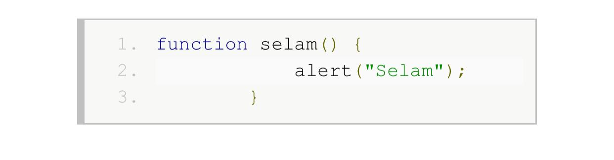
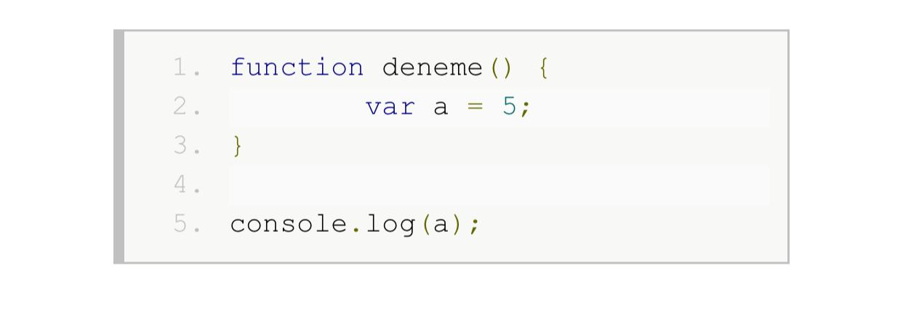

JavaScript fonksiyonları genel işlevi itibariyle diğer programlama dillerindeki fonksiyonlara benzerler. Ancak JavaScript fonksiyonları birer nesne olduğundan bir değerdirler ve bu yüzden farklı bir çok şekilde kullanılabilirler. Bu yazıda ve takip eden yazılarda JavaScript fonksiyonlarıyla ilgili genel konular ve farklı kullanım şekilleri anlatılmaktadır.
KULLANIMI:
Basit bir JavaScript fonksiyonu şöyle tanımlanabilir:
Bir fonksiyonu çağırmak için adını yazdıktan sonra eğer parametresi yoksa parantez açıp kapatarak çağırırız.
Örneğin üstteki fonksiyonu şöyle çağırabiliriz.
Bir fonksiyon adının yanına parantezleri yazmadan kullanmak fonksiyonun gövdesini / kendisini döndürür.
Fonksiyonlar birer sınıf örneği (nesne) olduğundan bir değer olarak kullanılabilirler.
Örnek:
(console.log fonksiyonu parantez içinde verilen değeri konsola yazdırır. Konsolu görmek için tarayıcı penceresinde F12 tuşuna basın. Altta, sağda veya ayrıca açılan penceredeki konsol / console sekmesini tıklayın.)
Çıktısı şöyle olacaktır:

(Bazı tarayıcılarda sadece selam() metni görebilirsiniz. Bu durumda console.log(selam) yerine alert(selam) yazmayı deneyin.)
Bu özellikten yararlanarak fonksiyonu bir değişkene atayıp ilgili fonksiyonu çağırabiliriz.
Fonksiyonlar 255 adede kadar parametre alabilirler. Fonksiyon parametreleri fonksiyon tanımında fonksiyon adından sonraki parantezlerin içinde birer isimle bildirilir ve birden çok parametre varsa aralarına virgül konur. Parametrelerde tip belirtilmez.
Parametre olarak verilen bir sayının karesini hesaplayıp çıktıya yazan bir fonksiyon şöyle yazılabilir.
Bu fonksiyonu şöyle çağırabiliriz.
Çıktısı:
25
Fonksiyonlar, yaptıkları işlemlerin sonucunda bir değer döndürebilirler. Fonksiyondan değer döndürmek için return ifadesi kullanılır. Bu ifadenin yanına döndüreceği değer yazılır. Fonksiyonun döndürdüğü değer fonksiyon çağrısı kullanarak (örneğin kare(5) yazarak) bir işlemde kullanılabilir veya bir değişkene atanabilir.
Bir sayının karesini hesaplayıp sonucu döndüren bir fonksiyon şöyle yazılabilir:
VEYA

Bu fonksiyonu diğer fonksiyonlar gibi parametreleri ile beraber adını yazarak çağırırız. Ancak farklı olarak bundan bir değer döneceğinden bu değeri bir yerlerde kullanabiliriz.
ÇIKTISI
55
Fonksiyonlara fonksiyonun tanımında yer alan parametreleri göndermek zorunlu değildir. Bu yüzden parametrenin gönderilip gönderilmediğini veya gönderilen parametrenin tipini sorgulamak durumunda kalabiliriz.
Bir parametrenin gönderilip gönderilmediğini şöyle sınayabiliriz.
8
9
Gönderilmeyen parametreler undefined değeri alırlar. Örnekte parametre bu değere sahipse (tanımlanmamışsa / gönderilmemişse) parametre değişkeninin değeri 2 yapılarak sayının karesinin alınmak istendiği varsayılıyor.
JavaScript'in undefined değerini mantıksal karşılaştırmalarda false kabul etmesinden faydalanarak aynısını şu şekilde de yapabiliriz.
undefined gibi boş string, null ve NaN (bir sayı değil) gibi değerler de bu örnekteki gibi test edilebilir. Bu değerler de if sınamalarında false kabul edilir. Bunların haricindeki değerler de true olarak kabul edilir.
Mantıksal olmayan değerlerin if ile sınanması işlemi genellikle bir değerin gönderilip gönderilmediğini test etmek için aşağıdaki gibi kullanılır.
Bazı durumlarda parametre ile değer gönderilmişse, gönderilen değeri, gönderilmemişse varsayılan bir değeri kullanmak için aşağıdaki gibi mantıksal karşılaştırmaların kısa devre özelliğinden yararlanırız.
Mantıksal karşılaştırmalarda and (&&) kullanıldığında, soldaki değer false, ise sağdaki değer true olsa da sonuç değişmediğinden sağdaki değere bakılmaz. Or (||) kullanıldığında ise soldaki değer true ise gerek olmadığından sağdaki değere bakılmaz. Soldaki değer false ise sağdaki değere göre sonuca karar verilir.. Bu çoklu mantıksal karşılaştırmaların kısa devre özelliğidir. Örnekteki;

satırında bu özellikten yararlanılmıştır. Eğer us parametresi için bir değer gönderilmişse us değişkeninin yeni değeri yine kendisi olacaktır. Ancak us için bir değer yoksa (undefined, null vs. ise) soldaki değer false kabul edildiğinden sağdaki değere bakılır ve sonuç olarak us değişkenine 2 değeri atanır. Kısa devre özelliğinden JavaScript programlamada çokça yararlanılır.
Eğer parametrenin tipinden emin olmanız gerekirse bunun için typeof kullanabilirsiniz. typeof , yanında belirtilen değerin veya değişkenin sakladığı değerin tipini tanımlayan "undefined", "object", "boolean", "number", "string", "function" veya "symbol" metinlerinden birini döndürür.
FONKSİYON VE DEĞİŞKEN KAPSAMI
Fonksiyonlar kendi dışında tanımlanan değişkenleri tanırlar. Anca bir fonksiyonun içinde tanımlanmış olan değişkenler diğer fonksiyonlar tarafından veya dışarıdan görülmezler.
Fonksiyon dışındaki değişken örneği
ÇIKTISI
5
Fonksiyon içindeki değişken örneği
ÇIKTISI
undefined
Çıktı olarak undefined yazılmıştır. Fonksiyonun içinde tanımlanan değişkenler fonksiyonun dışından görülmezler.